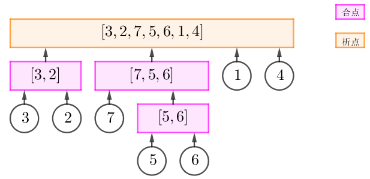
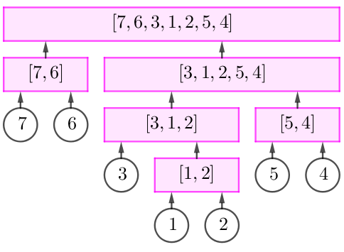

"也许，我的生命也已经如同风中残烛了吧。" 小绿如是说。
小绿同学因为微积分这门课，对 "连续" 这一概念产生了浓厚的兴趣。小绿打算把连续的概念放到由整数构成的序列上，他定义一个长度为 $m$ 的整数序列是连续的，当且仅当这个序列中的最大值与最小值的差，不超过 $m - 1$。例如 $\left[ 1, 3, 2 \right]$ 是连续的，而 $\left[ 1, 3 \right]$ 不是连续的。
某天，小绿的顶头上司板老大，给了小绿 $T$ 个长度为 $n$ 的排列。小绿拿到之后十分欢喜，他求出了每个排列的每个区间是否是他所定义的 "连续" 的。然而，小绿觉得被别的 "连续" 区间包含住的 "连续" 区间不够优秀，于是对于每个排列的所有右端点相同的 "连续" 区间，他只记录下了长度最长的那个 "连续" 区间的长度。也就是说，对于板老大给他的每一个排列，他都只记录下了在这个排列中，对于每一个 $1 \leq i \leq n$，右端点为 $i$ 的最长 "连续" 区间的长度 $L_i$。显然这个长度最少为 $1$，因为所有长度为 $1$ 的整数序列都是连续的。
做完这一切后，小绿爬上绿色床，美美地做了一个绿色的梦。
可是第二天醒来之后，小绿惊讶的发现板老大给他的所有排列都不见了，只剩下他记录下来的 $T$ 组信息。小绿知道自己在劫难逃，但是作为一个好奇的青年，他还是想知道：对于每一组信息，有多少个和信息符合的长度为 $n$ 的排列。
由于小绿已经放弃治疗了，你只需要告诉他每一个答案对 $998244353$ 取模的结果。
我们并不保证一定存在至少一个符合信息的排列，因为小绿也是人，他也有可能犯错。
第一行包含两个正整数 $T, n$ ($T \leq 100; n \leq 50000$)，分别表示板老大给小绿的排列个数、以及每个排列的长度。
接下来 $T$ 行，每行描述一组信息，包含 $n$ 个正整数，第 $i$ 组信息的从左往右第 $j$ 个整数 $L_{i, j}$ ($1 \leq L_{i, j} \leq j$) 表示第 $i$ 个排列中右端点为第 $j$ 个数的最长 "连续" 区间的长度。
对于每一行，如果行内包含多个数，则用单个空格将它们隔开。
对于每组信息，输出一行一个整数，表示可能的排列个数对 $998244353$ 取模的结果。
定义一个连续段为本原连续段，当且仅当不存在其它连续段与之相交且互不包含。由定义，本原连续段形成了一个嵌套结构 (nested relation)，于是它们之间构成一棵树——即该排序的析合树。
那么 $L_j$ 的含义又是什么呢？
不妨设 $\left[ i .. j \right]$ 为以 $j$ 结尾的最长连续段，则它一定是本原的。
于是 $\left[ i .. j \right]$ 就是析合树中右端点为 $j$ 的节点中，最 "浅" 者所代表的连续段的长度。
首先显然有 $L_n = n$。考察对于所有 $1 \leq j \leq n - 1$，以 $j$ 结尾的最长连续段，并将互相包含的去掉。
于是我们得到析合树上的若干个节点。它们之间的关系有点像线段树定位后的节点之间的关系。
如上图，如果对整个区间定位，可以得到合点 $\left[ 3, 2 \right]$、合点 $\left[ 7, 5, 6 \right]$ 以及叶节点 $1$；如果对区间 $\left[ 3, 2, 7, 5, 6 \right]$ 定位，可以得到合点 $\left[ 3, 2 \right]$、叶节点 $7$ 以及叶节点 $5$。
我们把这些连续段看成整体，与 $n$ 进行混合，得到一个相对排列。
按照上图，我们把合点 $\left[ 3, 2 \right]$、合点 $\left[ 7, 5, 6 \right]$、叶节点 $1$ 以及最终节点 $4$ 变为它们的相对排列，即 $2, 4, 1, 3$。
显然，排列 $2, 4, 1, 3$ 中，不包含最后一个元素的的本原连续段的长度均为 $1$。我们称这样的排列为 "基本排列"。
而根据题目中的信息，我们只能知道一个树结构，而通过它所得的相对排列 (如上文中的 $2, 4, 1, 3$) 是不知道的。
因此，如果将其换成另一个 "基本排列"，则这种定位的方法是不变的。
如，$4, 1, 3, 2$ 也是一个 "基本排列"，将其展开，得到原有的排列应该是 (节点内部的排列不变) $\left[ \color {red} {7, 6}, \color {olive} {3, 1, 2}, \color {green} 5, \color {blue} 4 \right]$，它所对应的析合树如下图：
虽然它们的析合树看起来就不同构，但是容易验证。对于每个 $1 \leq j \leq n - 1$，以 $j$ 结尾的最长连续段是相同的。
于是，对于每个右端点 $1 \leq j \leq n$，设析合树中右端点为 $j$ 的节点中的最浅者为 $r_j$，则以 $r_j$ 为根的子树可以定位出一系列节点并排列，而对不同的 $j$，这样的排列是独立的 (证明不难，容易由 nested relation 导出独立性)，于是就可以使用乘法原理了。
因此最后的问题是：有多少个长度为 $n$ 的 "基本排列"？我们把这个序列记为 $f_n$。如果我们求出了 $f_n$，那么算答案就是一件轻而易举的事情了：对于每个 $n$，像线段树定位一样找到它能定位到多少个节点 (不一定是子节点数量)，设能定位到 $K$ 个，则对答案乘上 $f_{K + 1}$。
那 $f_n$ 怎么求呢？当然是打表 OEIS 啦！然后你发现这个序列位于 OEIS 的 A090753，然后你就找到 $f_n$ 的递推式啦！
显然这样太不靠谱了，因为 CTSC 现场可没有 OEIS。
我们取任意排列的逆置换，于是问题就转化为：有多少个长度为 $n$ 的排列，使得其中所有长度 $> 1$ 的连续段均包含元素 $1$。(ps: 以下称这样的排列为 "基本排列")
考虑一个大小为 $n - 1$ 的基本排列，我们插入一个元素 $n$，当且仅当插入 $n$ 的位置不和 $n - 1$ 相邻时即得一基本排列。这样的排列共有 $\color {fuchsia} {\left( n - 2 \right) f_{n - 1}}$ 个。
注：这里我们计数了大小为 $n$ 的基本排列，满足去掉元素 $n$ 后仍然是基本排列。
如果一个大小为 $n$ 的排列，去掉元素 $n$ 后，所得的排列不是基本排列，说明去掉后存在一个连续段 $\left[ l, r \right]$。
首先，这样的连续段至多只有一个。否则，设有两个 $\left[ l_1, r_1 \right], \left[ l_2, r_2 \right]$，则由连续段性质可以假设两个区间不相交，于是 $n$ 最多 "吞" 掉其中一个连续段。另外一个连续段的存在即得矛盾。
设这个连续段的长度为 $l$ ($2 \leq l \leq n - 2$)，则这个连续段加入 $n$ 以后形成一个新的长度为 $l + 1$ 的 "段"。
这个段中内部元素的相对排列通过取相反元素 ($1 \leftrightarrow l + 2 - i$) 一一对应到长度为 $l + 1$ 的基本排列，故由 $f_{l + 1}$ 种方案。
考虑在原先的 $n - 1$ 元排列中，将这个连续段看成整体，对剩下的长度为 $n - l$ 的排列得到一个相对排列。这个长度为 $n - l$ 的排列也应该是基本排列，共 $f_{n - l}$ 种方案。
不过，在这个长度为 $n - l$ 的排列中，我们需要选一个元素将其展开成长度为 $l$ 的排列。
首先，我们不能选择 $n - l$ 进行展开，否则展开后的排列会出现 $n - 1$，在这个连续段中插入 $n$ 得到的还是一个连续段。
其次，我们还不能选择 $1$ 进行展开，因为 $1$ 所在的连续段本身就是允许出现，它应该归类于我们所述的第 1 种情况。
于是，一共有 $n - l - 2$ 种选择方案。由乘法原理，总的方案数等于 $\color {fuchsia} {f_{l+1} \cdot f_{n-l} \cdot \left( n - l - 2 \right)}$。
因此，第 2 种排列的数量为 $\displaystyle \color {fuchsia} {\sum_{l=2}^{n-2} f_{l+1} \cdot f_{n-l} \cdot \left( n - l - 2 \right)}$。
于是，$f_n$ 满足如下递推式：$$ f_n = \left( n - 2 \right) f_{n-1} + \sum_{i=3}^{n-2} \left( i - 2 \right) f_i f_{n-i+1} \tag 1 \label 1 $$
可以发现，这里的递推式和 OEIS 中给出的递推式 (在 offset 同构意义下) 是一模一样的。
那么，我们可以在 $O \left( n^2 \right)$ 的时间内预处理得到所有的 $f_n$。
然而原题中 $n \leq 50000$，又该怎么办呢？
注意到 $\eqref 1$ 式具有明显的 "卷积" 特征，因此我们可以使用分治多项式技巧来解决。
于是预处理的复杂度就降至 $O \left( n \log^2 n \right)$，总时间复杂度 $O \left( n \log^2 n + T n \right)$，就可以通过了。
(ps: 代码中的 f[i] 为上面式子中的 $f_{i+1}$)
#include <bits/stdc++.h>
#define lg2(x) (31 - __builtin_clz(x))
typedef long long ll;
const int N = 135400, mod = 998244353, root = 31;
typedef int vec[N], *pvec;
int n, q;
vec l, f, g, r;
inline void add(int &x, const int y) {x += y - mod, x += x >> 31 & mod;}
ll PowerMod(ll a, int n, ll c = 1) {for (; n; n >>= 1, a = a * a % mod) if (n & 1) c = c * a % mod; return c;}
namespace Poly {
int l, n;
vec rev, x, y;
void NTT_init(int len) {
if (l == len) return; n = 1 << (l = len);
ll g = PowerMod(root, 1 << (23 - l));
*x = 1, *rev = 0;
for (int i = 1; i < n; ++i)
x[i] = x[i - 1] * g % mod, rev[i] = rev[i >> 1] >> 1 | (i & 1) << (l - 1);
}
void DNTT(int *d, int *t) {
int i, *j, *k, len = 1, delta = n, R;
for (i = 0; i < n; ++i) t[rev[i]] = d[i];
for (i = 0; i < l; ++i) {
delta >>= 1;
for (k = x, j = y; j < y + len; k += delta, ++j) *j = *k;
for (j = t; j < t + n; j += len << 1)
for (k = j; k < j + len; ++k) {
R = (ll)y[k - j] * k[len] % mod;
k[len] = (*k - R < 0 ? *k - R + mod : *k - R);
*k = (*k + R >= mod ? *k + R - mod : *k + R);
}
len <<= 1;
}
}
vec B1, B2, B3;
void Mul(int degA, int degB, pvec a, pvec b, pvec c) {
if (!degA && degB == 1) {*c = (ll)*a * *b % mod, c[1] = *a * b[1] % mod; return;}
if (degA == 1 && !degB) {*c = (ll)*a * *b % mod, c[1] = a[1] * *b % mod; return;}
NTT_init(lg2(degA + degB) + 1);
int i; ll iv = mod - (mod - 1) / n;
memcpy(B1, a, (degA + 1) << 2), memset(B1 + (degA + 1), 0, (n - degA - 1) << 2);
memcpy(B2, b, (degB + 1) << 2), memset(B2 + (degB + 1), 0, (n - degB - 1) << 2);
DNTT(B1, B3), DNTT(B2, B1);
for (i = 0; i < n; ++i) B1[i] = (ll)B1[i] * B3[i] % mod;
DNTT(B1, B3), std::reverse(B3 + 1, B3 + n);
for (i = 0; i <= degA + degB; ++i) c[i] = B3[i] * iv % mod;
}
}
void solve(int L, int R) {
int i, M = (L + R + 1) / 2;
if (L + 1 == R) {
add(f[L], f[L - 1]), add(f[L], g[L - 1]), g[L] = f[L] * (L - 1ll) % mod; return;
}
solve(L, M);
if (L) {
Poly::Mul(M - L - 1, R - L - 1, f + L, g, r);
for (i = M; i < R; ++i) add(f[i], r[i - L]);
Poly::Mul(R - L - 1, M - L - 1, f, g + L, r);
for (i = M; i < R; ++i) add(f[i], r[i - L]);
} else {
Poly::Mul(M - 1, M - 1, f, g, r);
for (i = M; i < R; ++i) add(f[i], r[i]);
}
solve(M, R);
}
int main() {
int i, j, p, ans;
scanf("%d%d", &q, &n), f[2] = 2, solve(0, n), *f = 1, f[1] = 2;
for (; q; --q) {
for (i = 1; i <= n; ++i) scanf("%d", l + i);
for (ans = 1, i = (l[n] == n ? 1 : n + 2); i <= n; ++i) {
for (p = 0, j = i - 1; j > i - l[i]; j -= l[j], ++p);
if (j != i - l[i]) break;
ans = (ll)ans * f[p] % mod;
}
printf("%d\n", i == n + 1 ? ans : 0);
}
return 0;
}
坑1：注意需要判定题目给出的 $L_j$ 数组是否合法。一个数组合法当且仅当 $L_n = n$ 且所有连续段形成 nested relation。
坑2：和 [soj299]树计数 比较类似，由于被卷的两个函数在初始状态下都是未知的，因此要交叉更新。不过要注意在左端点为 $0$ 的时候只更新一次。